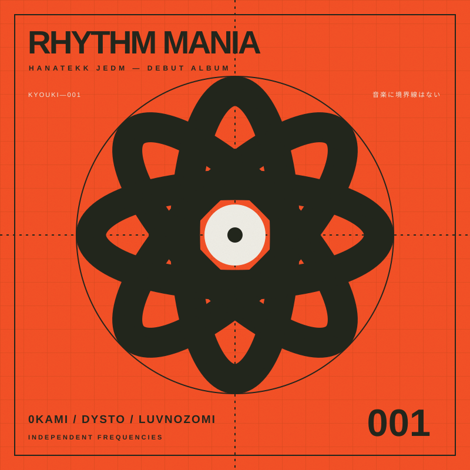

JAPANESE ELECTRONIC DANCE MUSIC音楽に境界線はない。 ↘
SOUND WITHOUT
BOUNDARIES.
A home for the loud, the fast, and the beautifully unexpected.
Independent music. Shared energy. This is HANATEKK.
ON THE RADAR / RELEASE 001
TURN IT UP. STAY A WHILE. ↙
KYOUKI—001DEBUT ALBUM / VARIOUS ARTISTS↗
FEATURED RELEASE001 / ∞
RHYTHM
MANIA↗
HANATEKK JEDM with 0kami, dysto & luvnozomi
Different minds. One shared frequency.
Step into the debut chapter of HANATEKK JEDM.
Originally shared via dystofuturemusic on Bandcamp.
THE LISTENING ROOM / YOUR FREQUENCY
PRESS PLAY. TUNE OUT.Good music.
No middleman.
Bring your tracks into the room.
Load audio files to listen in your browser.
Local playback only. Your files stay on your device.
TRACK / ARTIST00 TRACKS
◎
A little quiet in here.
Your tracks will appear here when you load them.SHARED ENERGY / THE COLLECTIVE
MANY MINDS. ONE MOVEMENT.dysto
02 / ARTISTluvnozomi
03 / ARTISTFOR THE LOVE
OF THE SOUND.
An independent space for electronic music and the people who make it. Built on curiosity, collaboration, and the kind of rhythm that stays with you.
FIND YOUR FREQUENCY ↗